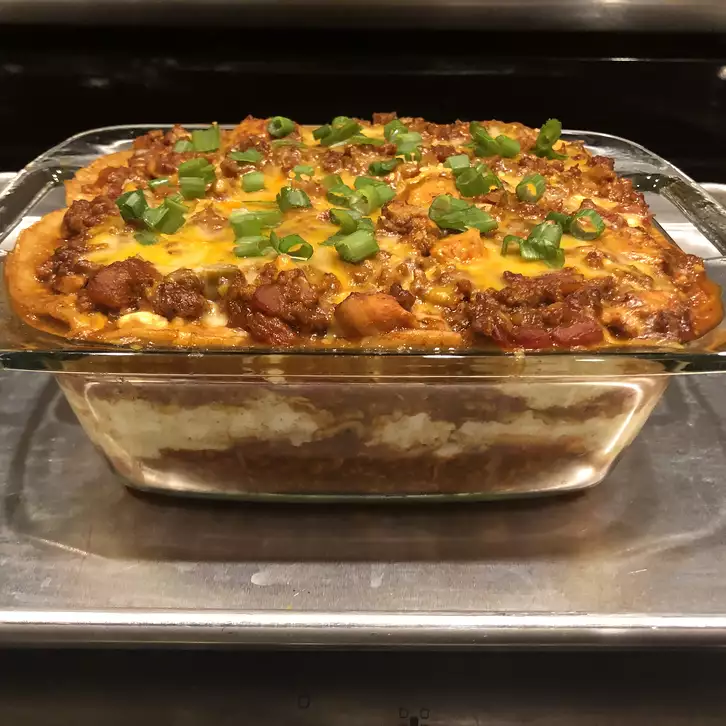

Lasagna Recipes
You will find anything you need here

Prep: 20 mins
Cook: 15 mins
Additional: 15 mins
Total: 1 Hr 50 mins
Servings: 8
Yield: 1 8x8-inch dish
Ingridients
1 tablespoon vegetable oil
1 onion, chopped
3 cloves garlic, chopped
1 1/4 pounds ground turkey
1 (28 ounce) can enchilada sause
1 (14.5 ounces) can diced tomatoes with lime juice and cilantro
1 (16 ounce) packege small-curb cottage cheese
1 egg
1 tablespoon ground cumin
5 (6 inch) corn tortillas, halved
2 cups shredded Mexican cheese blend
cooking spray
1 green onion, diced